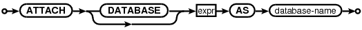

Choose any three.
|
|
SQL As Understood By SQLite
ATTACH DATABASE
attach-stmt:

The ATTACH DATABASE statement adds another database file to the current database connection. The filename for the database to be attached is the value of the expression that occurs before the AS keyword. The filename of the database follows the same semantics as the filename argument to sqlite3_open() and sqlite3_open_v2(); the special name ":memory:" results in an in-memory database and an empty string results in a new temporary database. The filename argument can be a URI filename if URI filename processing is enable on the database connection. The default behavior is for URI filenames to be disabled, however that might change in a future release of SQLite, so application developers are advised to plan accordingly.
The name that occurs after the AS keyword is the name of the database used internally by SQLite. The database-names 'main' and 'temp' refer to the main database and the database used for temporary tables. The main and temp databases cannot be attached or detached.
Tables in an attached database can be referred to using the syntax database-name.table-name. If the name of the table is unique across all attached databases and the main and temp databases, then the database-name prefix is not required. If two or more tables in different databases have the same name and the database-name prefix is not used on a table reference, then the table chosen is the one in the database that was least recently attached.
Transactions involving multiple attached databases are atomic, assuming that the main database is not ":memory:" and the journal_mode is not WAL. If the main database is ":memory:" or if the journal_mode is WAL, then transactions continue to be atomic within each individual database file. But if the host computer crashes in the middle of a COMMIT where two or more database files are updated, some of those files might get the changes where others might not.
There is a limit, set using sqlite3_limit() and SQLITE_LIMIT_ATTACHED, to the number of databases that can be simultaneously attached to a single database connection.